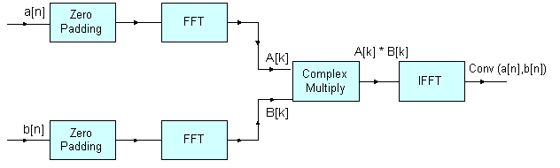

Convolution Example¶
-
group
ConvolutionExample Refer riscv_convolution_example_f32.c
- Description:
Demonstrates the convolution theorem with the use of the Complex FFT, Complex-by-Complex Multiplication, and Support Functions.
- Algorithm:
The convolution theorem states that convolution in the time domain corresponds to multiplication in the frequency domain. Therefore, the Fourier transform of the convoution of two signals is equal to the product of their individual Fourier transforms. The Fourier transform of a signal can be evaluated efficiently using the Fast Fourier Transform (FFT).
Two input signals,
a[n]andb[n], with lengthsn1andn2respectively, are zero padded so that their lengths becomeN, which is greater than or equal to(n1+n2-1)and is a power of 4 as FFT implementation is radix-4. The convolution ofa[n]andb[n]is obtained by taking the FFT of the input signals, multiplying the Fourier transforms of the two signals, and taking the inverse FFT of the multiplied result.This is denoted by the following equations: where
A[k]andB[k]are the N-point FFTs of the signalsa[n]andb[n]respectively. The length of the convolved signal is(n1+n2-1).- Block Diagram:

- Variables Description:
testInputA_f32points to the first input sequencesrcALenlength of the first input sequencetestInputB_f32points to the second input sequencesrcBLenlength of the second input sequenceoutLenlength of convolution output sequence,(srcALen + srcBLen - 1)AxBpoints to the output array where the product of individual FFTs of inputs is stored.
- NMSIS DSP Software Library Functions Used:
riscv_fill_f32()
riscv_copy_f32()
riscv_cfft_radix4_init_f32()
riscv_cfft_radix4_f32()
riscv_cmplx_mult_cmplx_f32()